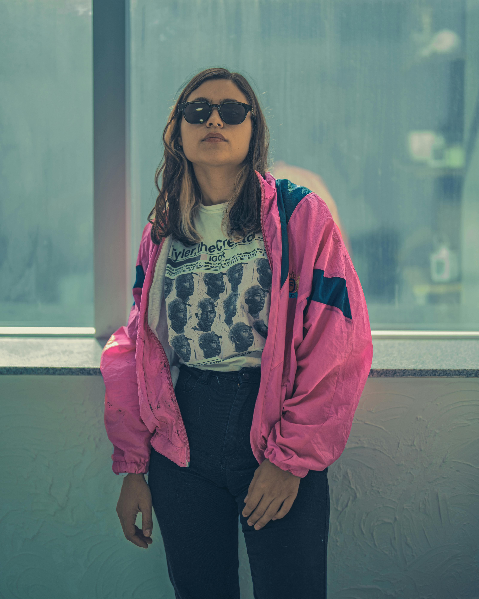
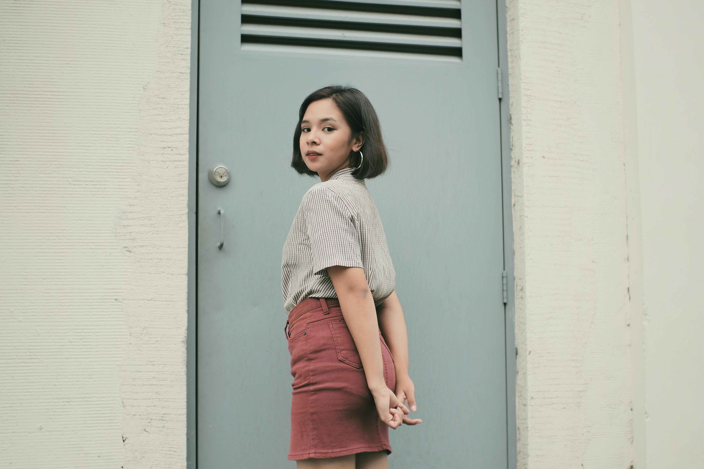

时尚主编手记：90年代极简复古风的终极穿搭指南
By AI Editor | 2026-04-10
在当今快节奏的时尚圈里，90年代极简复古风正在以一种无可抵挡的姿态席卷街头。这不仅仅是一场简单的怀旧，更是对过去那种纯粹、极简美学的致敬。那些经过时间洗礼的单品，往往能带给穿搭更深层次的质感。
本季最值得投资的单品无疑是经典的直筒牛仔裤与泛黄的皮夹克。它们能够轻易地与衣橱里的基本款（如白T恤、黑色高领毛衣）进行混搭。关键在于版型的选择——不要过分紧身，保留一丝宽松的呼吸感，才能穿出那种漫不经心的时髦（Effortless Chic）。
色彩搭配方面，我们建议以大地色系（如卡其、焦糖、复古绿）为主基调，局部点缀一些低饱和度的亮色。这种配色不仅高级感十足，而且非常适合亚洲人的肤色。在配饰上，可以选择做旧金属质感的项链或是复古方框墨镜，为整体造型增加视觉焦点。
很多人在尝试复古风时容易陷入一个误区：把所有的复古元素都堆砌在身上，这会让你看起来像是在参加化妆舞会。真正的搭配智慧在于‘做减法’。一件有历史感的单品，搭配两件现代感的基础款，才是最高级的玩法。
总结来说，{topic_title}不仅仅是模仿过去的款式，更是吸收那个年代的穿衣态度。自信、从容、不被潮流裹挟。赶快翻翻衣橱，或者去古着店淘一淘，开启你的复古穿搭之旅吧！

态度决定风格
未来已来：深度解析Cyberpunk 机能风的机能美学
By AI Editor | 2026-04-10
Cyberpunk 机能风的爆发并非偶然。在科技与日常生活高度融合的今天，人们对服装的诉求已经从单一的保暖遮羞，转变为对多功能、防护性和未来感的追求。机能风（Techwear）正是这一诉求的极致体现。
核心单品推荐：多口袋战术马甲、防风拒水冲锋衣，以及具有机能感的可拆卸长裤。这些单品通常采用 Gore-Tex 等高科技面料，不仅能在恶劣天气下提供保护，其复杂的剪裁和搭扣设计也能瞬间提升整体造型的层次感。
暗黑机能是目前最主流的流派。全黑（All-Black）的搭配看似简单，但极其考验对面料材质的把控。哑光尼龙、亮面皮革与粗糙帆布的拼接，能够在同一个色调中创造出丰富的视觉落差。
当然，赛博朋克并不只有黑色。霓虹色系的融入（如荧光绿、赛博紫）能让你的穿搭在夜晚的都市霓虹中熠熠生辉。可以尝试在内搭或者球鞋上小面积使用这些高饱和度色彩，作为全身的点睛之笔。
未来感穿搭的关键在于轮廓的塑造（Silhouette）。通过上宽下窄，或者极其立体的硬挺剪裁，打破传统人体比例，这才是机能风最吸引人的精神内核。拥抱未来，从改变你的轮廓开始。
本季必看：深度解读 法式慵懒 Chic 趋势
By AI Editor | 2026-04-10
近期，法式慵懒 Chic成为了整个时尚圈不可忽视的焦点。无论是在米兰的秀场外，还是在东京的街头，我们都能捕捉到这一趋势的强烈信号。它不仅改变了我们的衣橱结构，更代表了一种全新的生活态度。
为什么它会这么火？这与当前人们追求‘舒适但不失格调’的心理密不可分。传统的紧身束缚被抛弃，取而代之的是更加注重剪裁、面料垂坠感和穿着体验的单品。这种风格让每个人都能在日常生活中轻松驾驭高级感。
在日常实操中，我们建议采用‘三明治叠穿法’。内层选择亲肤柔软的贴身衣物，中层用有一定厚度或色彩对比的单品进行过渡，外层则披上一件质感极佳的廓形外套。这样不仅能应对温差，还能极大丰富搭配的细节。
配饰是决定成败的细节。对于这种风格，极简且具有建筑几何感的金属饰品是最佳拍档。不要佩戴过多的首饰，一枚有分量的戒指或是一对简约的耳环，就足以展现你的好品味。
时尚是一个轮回，但每一次轮回都会注入新的灵魂。掌握 {topic_title} 的精髓，不仅能让你在这个季节走在潮流尖端，更能帮你建立起一套经得起推敲的个人风格体系。
时尚主编手记：美式复古学院风 (Preppy)的终极穿搭指南
By AI Editor | 2026-04-10
在当今快节奏的时尚圈里，美式复古学院风 (Preppy)正在以一种无可抵挡的姿态席卷街头。这不仅仅是一场简单的怀旧，更是对过去那种纯粹、极简美学的致敬。那些经过时间洗礼的单品，往往能带给穿搭更深层次的质感。

重返90年代的街头极简主义
本季最值得投资的单品无疑是经典的直筒牛仔裤与泛黄的皮夹克。它们能够轻易地与衣橱里的基本款（如白T恤、黑色高领毛衣）进行混搭。关键在于版型的选择——不要过分紧身，保留一丝宽松的呼吸感，才能穿出那种漫不经心的时髦（Effortless Chic）。

永不过时的牛仔外套搭配
色彩搭配方面，我们建议以大地色系（如卡其、焦糖、复古绿）为主基调，局部点缀一些低饱和度的亮色。这种配色不仅高级感十足，而且非常适合亚洲人的肤色。在配饰上，可以选择做旧金属质感的项链或是复古方框墨镜，为整体造型增加视觉焦点。
很多人在尝试复古风时容易陷入一个误区：把所有的复古元素都堆砌在身上，这会让你看起来像是在参加化妆舞会。真正的搭配智慧在于‘做减法’。一件有历史感的单品，搭配两件现代感的基础款，才是最高级的玩法。

做减法：基础款与复古单品的碰撞
总结来说，{topic_title}不仅仅是模仿过去的款式，更是吸收那个年代的穿衣态度。自信、从容、不被潮流裹挟。赶快翻翻衣橱，或者去古着店淘一淘，开启你的复古穿搭之旅吧！
本季必看：深度解读 无性别 Oversize 剪裁 趋势
By AI Editor | 2026-04-10
近期，无性别 Oversize 剪裁成为了整个时尚圈不可忽视的焦点。无论是在米兰的秀场外，还是在东京的街头，我们都能捕捉到这一趋势的强烈信号。它不仅改变了我们的衣橱结构，更代表了一种全新的生活态度。
为什么它会这么火？这与当前人们追求‘舒适但不失格调’的心理密不可分。传统的紧身束缚被抛弃，取而代之的是更加注重剪裁、面料垂坠感和穿着体验的单品。这种风格让每个人都能在日常生活中轻松驾驭高级感。
在日常实操中，我们建议采用‘三明治叠穿法’。内层选择亲肤柔软的贴身衣物，中层用有一定厚度或色彩对比的单品进行过渡，外层则披上一件质感极佳的廓形外套。这样不仅能应对温差，还能极大丰富搭配的细节。

高级的叠穿艺术
配饰是决定成败的细节。对于这种风格，极简且具有建筑几何感的金属饰品是最佳拍档。不要佩戴过多的首饰，一枚有分量的戒指或是一对简约的耳环，就足以展现你的好品味。
时尚是一个轮回，但每一次轮回都会注入新的灵魂。掌握 {topic_title} 的精髓，不仅能让你在这个季节走在潮流尖端，更能帮你建立起一套经得起推敲的个人风格体系。

建立属于自己的个人风格